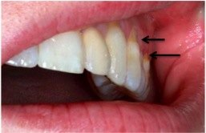
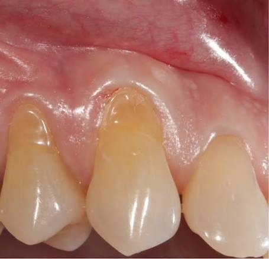
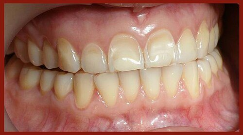
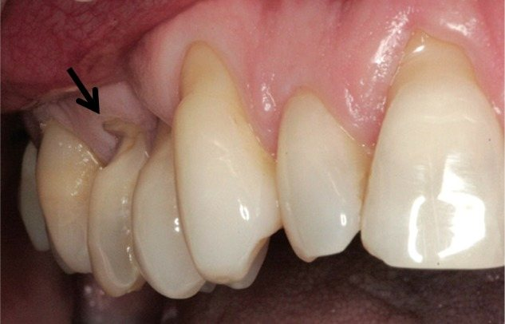
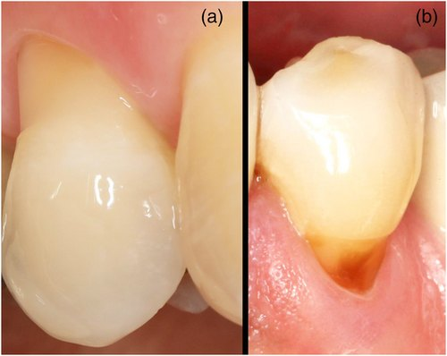
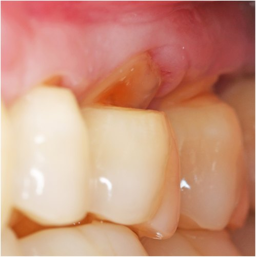
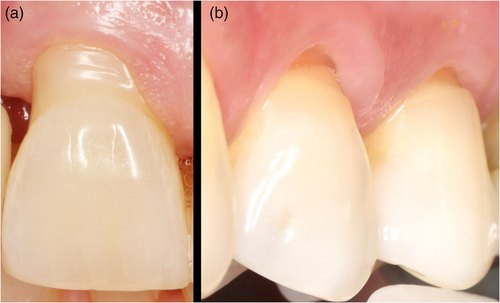
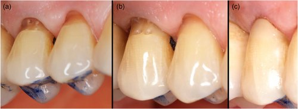
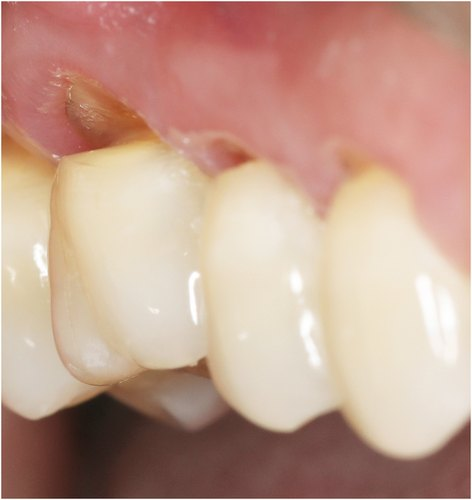

序章 · THE BREACH
NCCL｜非齲蝕性齒頸部病變
一道微小缺損，背後可能是一場多因素的消耗戰。

01 · LOCATE THE FRONT
NCCL 是位置與型態的描述
接近釉質牙骨質交界（CEJ）的硬組織缺損。
非齲蝕性：病變不以細菌性齲蝕為起因。
02 · THREE FRONTS
敵情分析｜不要只怪刷牙
機械磨耗：牙齒以外的物理摩擦。
化學酸蝕：非細菌來源的酸造成組織流失。
咬合應力：可能參與；abfraction 的獨立角色仍有爭議。

03 · ABRASION
第一戰線｜機械性磨耗
評估刷牙力道、方式與牙膏磨耗性。
刷牙是風險評估的一環，不能憑外觀直接定因。

04 · EROSION
第二戰線｜化學性酸蝕
外因性來源：酸性飲食與飲料。
內因性來源：胃酸逆流或反覆嘔吐。
病史、酸暴露頻率與唾液狀態都要一起評估。

05 · ABFRACTION ?
第三戰線｜有爭議的應力假說
理論：負載使齒頸區彎曲，產生局部應力。
模型中的應力集中，不等於臨床獨立因果已證實。
避免單憑楔形缺損就進行不可逆的咬合調整。
06 · COMBINED ASSAULT
同一位患者，也可能隨時間改變
酸暴露 → 表面軟化。
機械摩擦 → 組織流失加劇。
個別行為與生物條件 → 形成不同進展速度。

07 · READ THE TERRAIN
楔形 / 碟形 / 混合型
楔形：角度較銳利。
碟形：輪廓較寬、底部較圓。
混合型：可能同時出現不同輪廓。

08 · EXPOSED FRONT
合併缺損｜Combined defect
檢查 CEJ 是否仍可辨識。
從側面評估階差、深度與缺損範圍。
根面覆蓋與修復計畫需共同設計。
09 · RECONNAISSANCE
四個方向，建立基準線
酸暴露：飲食與胃酸相關病史。
機械因素：刷牙與口腔習慣。
症狀與結構：敏感、活髓、清潔與深度。
進展：標準化照片、測量與回診比較。

10 · FIELD DECISION
戰術演練｜你會直接補牙嗎？
情境：淺缺損、無敏感、可清潔。
連續記錄沒有明顯進展。
先控制風險因子，再安排追蹤。

11 · RESTORE WHEN NEEDED
有適應症，才重建防線
持續敏感，且非侵入性處理無效。
缺損影響結構、接近牙髓或難以清潔。
依美觀、功能與牙周治療需求共同決策。
12 · CHOOSE THE EQUIPMENT
複合樹脂 / 玻璃離子體
複合樹脂：重視美觀，需可靠黏著與隔濕。
玻璃離子體類：依位置、濕度控制與材料特性評估。
合併牙齦退縮時，協調修復輪廓與牙周計畫。
終章 · HOLD THE LINE
評估 → 控制風險 → 追蹤 → 必要時修復
補牙恢復已流失的形態，不能取代病因管理。
持續記錄、衛教與追蹤，才是長期防守。
附錄 · EVIDENCE LOG
內容來源與延伸閱讀
原始 NCCL 教學頁：tonytung52.github.io/Analysis-NCCL/
Nascimento 等（2016）：病因、診斷與治療選項。
2013 文獻回顧：abfraction 的病因仍具爭議。

支線 · RESTORATION CHECK
修復決策的三個檢核
症狀：敏感是否持續，保守處理是否失敗？
結構與清潔：深度、牙髓距離、菌斑控制如何？
需求：患者的美觀、功能與牙周計畫是什麼？